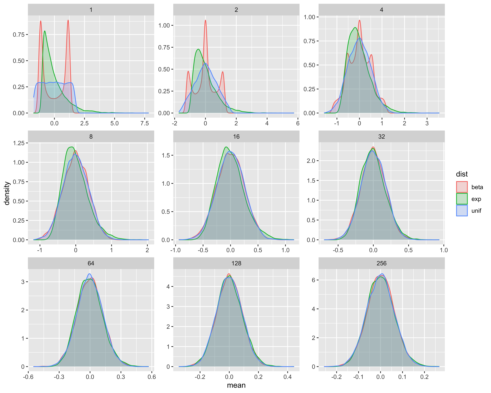
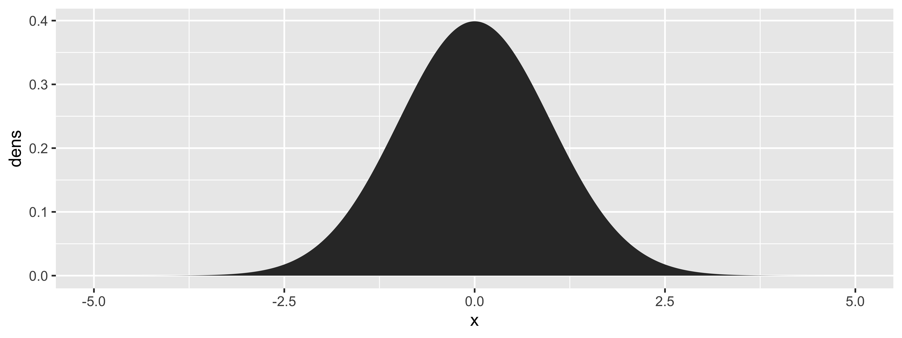
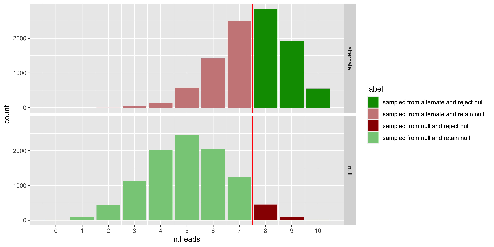
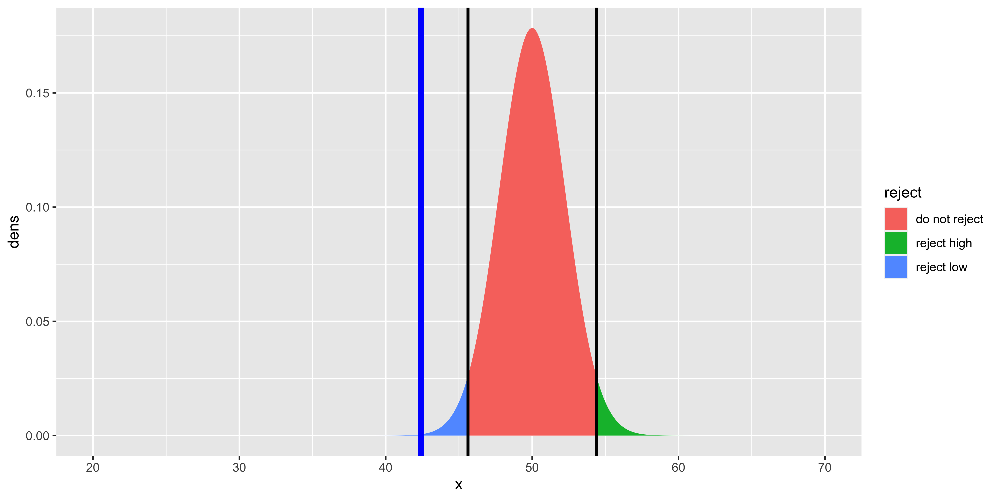

Visualizations
These notes are largely there to provide quick examples of ggplot2 code that generates graphs for particular data. I assume that the ggplot2 introduction from R4DS got you oriented, but if not, we have a few more notes on the basics of ggplot.
General rules for scientific data visualization.
The order of these rules indicates their priority (as I see it): rules further down are superceded by higher up rules if they are in conflict.
Everything should be labeled, and interpretable without consulting a figure caption or having to solve a puzzle.
Graphs should facilitate relevant quantitative interpretation and comparisons.
Graphs should represent variability and uncertainty to permit inferential statistics by eye
Graphs should follow conventions for the kind of information/data being presented.
Graphs should not waste ink and should otherwise look pretty.
Picking a plot (what’s convention)
When you make a plot, you are trying to show the relationship between one or more response/outcome variables, and some explanatory variables (in experimental settings, these are often called dependent and independent variables, respectively). These variables can be classified as either categorical or numerical. I find it helpful to think of conventional plot options in terms of a pseudo formula: what kind of response variable is being explained by what types of explanatory variables. e.g., categorical ~ numerical would mean you are showing how a categorical response variable changes with some numerical explanatory variable. Most of this document is structured based on such formulas.
Categorical ~ 0
How do we show the distribution of some categorical variable (that’s what I mean by “~0”: no explanatory variables)? The three main plot types to consider here are: histogram, pie chart, and stacked area plot.
Histograms make comparisons of frequency across categories easiest (you just have to compare how tall two bars are). Pie charts make this somewhat difficult, because we are pretty bad at visually comparing similar angles; however, pie charts do effectively convey the absolute proportion of a category (which is hard to assess in a histogram). Stacked area plots are a sort of compromise of both: comparisons across categories are harder than in a histogram, but easier than a pie chart; absolute proportion is easier than in a histogram, but harder than a pie chart.
For our plots of a categorical variable with no expanatory variables, we will use the SPSP demographics data.
library(tidyverse)
spsp <- read_csv('http://vulstats.ucsd.edu/data/spsp.demographics.cleaned.csv')
spsp %>% group_by(ethnicity) %>% summarize(n=n()) %>% knitr::kable()| ethnicity | n |
|---|---|
| Arab | 23 |
| Asian | 504 |
| Black | 133 |
| Latino | 128 |
| Native American | 33 |
| Other | 344 |
| White | 2586 |
Histogram
The classic distribution plot is a histogram: one bar per category, usually arranged along the x-axis, with the y-axis showing frequencies.
( plot1 <- ggplot(spsp, aes(x=ethnicity, fill=ethnicity)) +
geom_bar()+
## the lines above form the basis of the plot,
## the lines below just make it look nicer
scale_fill_brewer(palette = "Set1")+
theme_bw()+
theme(legend.position = "none",
axis.text.x = element_text(angle=90, hjust=1)) )
Pie chart
Pie charts show the proportion of each category as wedges on a circle. (Pie charts are generally frowned upon, so you better have a really good reason to use them.) Also, because they are out of favor, making them in ggplot is a bit weird: you have to make a stacked area plot, then convert the coordinates to polar.
( plot2 <-
ggplot(spsp, aes(x=factor(1),fill=ethnicity))+
geom_bar(aes(y = (..count..)/sum(..count..)), width=1)+
coord_polar(theta="y")+
## the lines above form the basis of the plot,
## the lines below just make it look nicer
scale_fill_brewer(palette = "Set1")+
theme_bw()+
theme(legend.position = "none",
axis.title = element_blank(),
axis.text = element_blank(),
panel.grid = element_blank()) )
Stacked area
Think of a stacked area plot as a histogram, with all the bars stacked on top of each other (hopefully, with different colors!). This plot connects to methods of plotting a categorical variable as a function of some other variables.
( plot3 <- ggplot(spsp, aes(x=factor(1),fill=ethnicity))+
geom_bar(width=0.75, stat='count')+
## the lines above form the basis of the plot,
## the lines below just make it look nicer
scale_fill_brewer(palette = "Set1")+
theme_bw()+
guides(fill=guide_legend(title="SPSP\nethnicity"))+
theme(axis.text.x = element_blank(),
axis.title.x = element_blank()) )
numerical ~ 0
To look at the distribution of a numeric variable, we will generally need to do something to smooth or bin over the number line*. Histograms have explicit bins, and show the frequency of numbers in each bin. Density plots smooth over the numberline not in explicit bins, but with a continuous kernel. Histograms do a better job of coneying how noisy your data are, but are quite sensitive to bin placement: they will give you a different impression depending on bin width and bin shifts (e.g., bin 1-2, 2-3, … vs 0.5-1.5, 1.5-2.5, ….). Because density plots do not have discrete bins, they are smoother, so there is no notion of shifting a bin, and they tend to be less sensitive to bandwidth; however, they tend to make your data look clean even when they are not.
Let’s use some data from a 10 mile race to plot the distribution of a numeric variable.
load(url("http://vulstats.ucsd.edu/data/cal1020.cleaned.Rdata"))
glimpse(cal1020)## Rows: 3,234
## Columns: 11
## $ name.first <fct> Jordan, Macdonard, Sergio, Jamesom, Darren, Okwaro, Steven, Lindsey, Derek, Daniel, Andrew, David, Natasha, Tim,…
## $ name.last <fct> Chipangama, Ondara, Reyes, Mora, Brown, Raura, Underwood, Scherf, Bradley, Seidel, Corman, Kloz, Labeaud Anzures…
## $ City <fct> "Flagstaff", "Grand Prairie", "Palmdale", "Arroyo Grande", "Solana Beach", "Oceanside", "Encinitas", "High Falls…
## $ State <chr> "AZ", "TX", "CA", "CA", "CA", "CA", "CA", "NY", "CA", "CA", "CA", "CA", "CA", "CA", "AZ", NA, "CA", "CA", "CA", …
## $ Zip <fct> 86004, 75054, 93551, 93420, 92075, 92057, 92024, 12440, 92024, 92078, 92130, 92056, 92123, 92121, 85048, ?, 9202…
## $ age <dbl> 25, 29, 32, 30, 28, 39, 26, 27, 33, 34, 33, 39, 26, 32, 41, 24, 42, 48, 51, 33, 46, 50, 44, 44, 26, 23, 38, 30, …
## $ sex <chr> "male", "male", "male", "male", "male", "male", "male", "female", "male", "male", "male", "male", "female", "mal…
## $ time.sec <dbl> 2880, 2885, 2970, 3062, 3083, 3206, 3222, 3289, 3318, 3363, 3388, 3413, 3421, 3435, 3445, 3485, 3489, 3513, 3515…
## $ corral <int> 1, 0, 0, 0, 1, 1, 0, 0, 1, 1, 1, 1, 0, 1, 1, 0, 1, 1, 1, 0, 1, 0, 1, 1, 0, 1, 1, 1, 1, 1, 1, 1, 1, 1, 1, 1, 1, 1…
## $ pace.min <dbl> 4.800000, 4.808333, 4.950000, 5.103333, 5.138333, 5.343333, 5.370000, 5.481667, 5.530000, 5.605000, 5.646667, 5.…
## $ speed.mph <dbl> 12.500000, 12.478336, 12.121212, 11.757022, 11.676938, 11.228946, 11.173184, 10.945576, 10.849910, 10.704728, 10…Histogram & density
plot1 <- ggplot(cal1020, aes(x=time.sec/60))+
geom_histogram(binwidth = 1)+
ggtitle('histogram')+
scale_x_continuous('Minutes', breaks=seq(0,240, by=30))+
theme_minimal()
plot2 <- ggplot(cal1020, aes(x=time.sec/60))+
geom_density(fill='gray', alpha=0.5)+
ggtitle('density')+
scale_x_continuous('Minutes', breaks=seq(0,240, by=30))+
theme_minimal()
gridExtra::grid.arrange(plot1, plot2, nrow=1)numerical ~ categorical
This is the most common data visualization category I see in psychology: how does some numerical variable change as a function of condition (category). Usually it is portrayed as a bar plot (hopefully with error bars). But we can do better.
First, let’s make all the variations, and put them in one figure (below we just make each plot, and then show them all together.)
Bar plot with error bars
We adopt the common approach of using the mean +/- 1 standard error of the mean as the error bars here.
plot1 <- ggplot(cal1020, aes(x=sex, fill=sex, y=speed.mph))+
stat_summary(fun.y = mean,
geom="bar")+
stat_summary(fun.data = mean_se,
geom="errorbar",
width=0.5)+
scale_y_continuous('Avg speed (mph; +/- s.e.m.)', breaks = seq(0, 15, by=1))+
ggtitle('Barplot')+
theme_minimal()+
coord_cartesian(ylim=c(5,7))+
theme(legend.position = 'none')Jittered data points.
Data points are jittered, because otherwise they would fall on top of each other, and would be impossible to discern.
plot2 <- ggplot(cal1020, aes(x=sex, color=sex, y=speed.mph))+
geom_jitter(size=0.1, alpha=0.5)+
scale_y_continuous('Speed (mph)', breaks = seq(0, 15, by=1))+
ggtitle('Jittered')+
theme_minimal()+
theme(legend.position = 'none')Viola/Violin plot
Like a smoothed density histogram, except it’s symmetric, so it looks nicer when many are arrayed side by side.
plot3 <- ggplot(cal1020, aes(x=sex, fill=sex, y=speed.mph))+
geom_violin()+
scale_y_continuous('Speed (mph)', breaks = seq(0, 15, by=1))+
ggtitle('Violin')+
theme_minimal()+
theme(legend.position = 'none')Box and whiskers plot
This is a visualization of a bunch of summary statistics of the distribution. By default, these summary statistics are: the median (middle line), the 25th and 75th percentile (edges of the box), 25th percentile - 1.5(IQR), and 75th percentile + 1.5(IQR) (the whiskers); and it shows the “outliers” (data points that are beyond those IQR intervals.
plot4 <- ggplot(cal1020, aes(x=sex, fill=sex, color=sex, y=speed.mph))+
geom_boxplot(alpha=0.5, outlier.alpha = 0.1)+
scale_y_continuous('Speed (mph)', breaks = seq(0, 15, by=1))+
ggtitle('Boxplot')+
theme_minimal()+
theme(legend.position = 'none')Overlayed densities
(here we flip the coordinates so we can picture them along side the other graphs)
plot5 <- ggplot(cal1020, aes(x=speed.mph, fill=sex, color=sex))+
geom_density(alpha=0.5)+
coord_flip()+
scale_x_continuous('Speed (mph)', breaks = seq(0, 15, by=1))+
ggtitle('Densities')+
theme_minimal()+
theme(legend.position = 'none')Empirical cumulative distribution
(here we flip the coordinates so we can picture them along side the other graphs)
plot6 <- ggplot(cal1020, aes(x=speed.mph, fill=sex, color=sex))+
stat_ecdf(geom='line', size=1, alpha=0.75)+
coord_flip()+
scale_x_continuous('Speed (mph)', breaks = seq(0, 15, by=1))+
scale_y_continuous('CDF', breaks=c(0, 0.5, 1.0))+
ggtitle('ECDF')+
theme_minimal()+
theme(legend.position = 'none')Comparisons
gridExtra::grid.arrange(plot1, plot2, plot3, plot4, plot5, plot6, nrow=1)
The mean + standard error bar plot makes the implicit statistical comparison (t-test) easy to do by eye, but it obscures what the actual data look like (both the underlying variability, as well as it’s messiness). The jittered plot is very faithful to the underlying data, but it’s tricky to figure out how the distributions compare. The violin plot hides some of the data messiness, but does make comparisons easier. The boxplot is useful for showing the five-number summary, but not much else. Overlayed density plots are more intuitive than violin plots, but they only work well for a small number of categories. Empirical CDFs are also only good for a few categories, and their strength is in showing differences in the tails of the distributions.
Recommendations
My suggestion is to use a point+range to indicate the mean and standard error (thus facilitating comparisons), and to overlay that on some representaiton of the underlying data. I recommend using a jittered display of individual data points if you have relatively little data, and a violin plot if you have a lot of data (such that the jitter is very hard to make informative).
Below, to show the few-data-points case, I sub-sample the data.
# recommendation for few data points
plot1 <- cal1020 %>%
sample_n(50) %>%
ggplot(aes(x=sex, fill=sex, color=sex, y=speed.mph))+
geom_jitter(width=0.25, size = 0.75, alpha=0.7)+
stat_summary(fun.data = mean_se,
geom="pointrange",
fatten = 2,
size=1)+
scale_y_continuous('Speed (mph +/1 sem)', breaks = seq(0, 15, by=1))+
theme_minimal()+
theme(legend.position = 'none')
## Here we will write a function to generate a 95% confidence interval
mean_ci <- function(x){
m = mean(x)
se = sd(x)/sqrt(length(x))
ql = qnorm(1-0.025)
c('y'=m, 'ymin'=m-ql*se, 'ymax'=m+ql*se)
}
plot2 <- cal1020 %>%
ggplot(aes(x=sex, fill=sex, color=sex, y=speed.mph))+
geom_violin(alpha=0.3)+
stat_summary(fun.data = mean_ci,
geom="pointrange",
fatten = 2,
size=1)+
scale_y_continuous('Speed (mph +/- 2 sem)', breaks = seq(0, 15, by=1))+
theme_minimal()+
theme(legend.position = 'none')
gridExtra::grid.arrange(plot1, plot2, nrow=1)
numerical ~ numerical (2 x numerical ~ 0)
To show the joint distribution of two numerical variables, or one numerical variable as a function of another, the obvious choice is a scatterplot. However, a scatterplot, just like a jittered display of data points, is difficult to make usable when you have a lot of data (you need to tinker with point size and point transparency so that the display isn’t just an undifferentiated blob). A 2D histogram, mapping frequency onto color, is a better choice if you have a lot of data.
Scatter and heatmap
plot1 <- cal1020 %>%
ggplot(aes(x=age, y=speed.mph, alpha=0.5)) +
geom_point(size=0.5, position=position_jitter(0.25))+
scale_y_continuous('Speed (mph)', breaks = seq(0, 15, by=1))+
ggtitle('scatterplot')+
theme_minimal()+
theme(legend.position = 'none')
plot2 <- cal1020 %>%
ggplot(aes(x=age, y=speed.mph)) +
geom_bin2d()+
scale_fill_continuous(low="#DDDDDD", high="#000000")+
scale_y_continuous('Speed (mph)', breaks = seq(0, 15, by=1))+
ggtitle('heatmap histogram')+
theme_minimal()
gridExtra::grid.arrange(plot1, plot2, nrow=1)
Conditional means
The other popular way to show the relationship between a numerical response (y) and a numerical explanatory variable (x) is to show the mean (plus error bars) of y for a given range of x. Such conditional means are typically connected with a line, and sometimes even the error bars are connected in a ribbon. This is the most direct way of showing the “conditional” means, but is generally impractical unless you have a lot of data. The most common way to show conditional means is to show the fitted y~x line; this takes us further away from the data (because it assumes that the conditional means follow a line), and usually gives us a false impression of how linear the relationship is. The other common alternative is to do “LOESS” smoothing (locally weighted regression); for each point we are plotting, the LOESS method fits a function to all the data, but weights the data based on how far away it is from the point we are interested; the consequence is a smooth, wiggly line that generally looks nice, but often misleads folks into thinking that they have evidence for non-linearities in their data.
Generally, I would recommend showing the raw data distribution (as in the subsection above), plus a representation of whatever model you fit to those data (if you fit a line, show a line; if you fit a parabola, show the parabola).
## make bins and calculate mean, se
cal1020.binned <- cal1020 %>%
group_by(age.bin = floor(age/5)*5+2.5) %>%
summarize(mean = mean(speed.mph), sem=sd(speed.mph)/sqrt(n()))
plot1 <- cal1020.binned %>%
ggplot(aes(x=age.bin, y=mean, alpha=0.5)) +
geom_point()+
geom_line()+
geom_pointrange(aes(y=mean, ymin=mean-sem, ymax=mean+sem))+
scale_y_continuous('Mean speed (mph +/- sem)', breaks = seq(0, 15, by=1))+
ggtitle('y|x')+
theme_minimal()+
theme(legend.position = 'none')
plot2 <- cal1020.binned %>%
ggplot(aes(x=age.bin, y=mean, alpha=0.5)) +
geom_line()+
geom_point()+
geom_ribbon(aes(ymin=mean-sem, ymax=mean+sem))+
scale_y_continuous('Mean speed (mph +/- sem)', breaks = seq(0, 15, by=1))+
ggtitle('y|x Ribbon')+
theme_minimal()+
theme(legend.position = 'none')
plot3 <- cal1020 %>%
ggplot(aes(x=age, y=speed.mph, alpha=0.5)) +
geom_smooth(method='lm', color='red', fill='red', alpha=0.5)+
scale_y_continuous('Fitted speed (mph + 95% CI)', breaks = seq(0, 15, by=1))+
ggtitle('Line')+
theme_minimal()+
theme(legend.position = 'none')
plot4 <- cal1020 %>%
ggplot(aes(x=age, y=speed.mph, alpha=0.5)) +
geom_smooth(method='loess', color='blue', fill='blue', alpha=0.5)+
scale_y_continuous('Fitted speed (mph + 95% CI)', breaks = seq(0, 15, by=1))+
ggtitle('LOESS')+
theme_minimal()+
theme(legend.position = 'none')
gridExtra::grid.arrange(plot1, plot2, plot3, plot4, nrow=1)
numerical ~ numerical + categorical
If you add a categorical variable to those numerical~numerical plots, the obvious choice would be to color the points/fitted lines. However, if you have a lot of data, the scatterplots become unusable, so sometimes it is worth splitting the different categories into facets, as shown below.
plot1 <- cal1020 %>%
ggplot(aes(x=age, y=speed.mph, fill=sex, color=sex, group=sex)) +
geom_point(size=0.5, alpha=0.5, position=position_jitter(0.25))+
geom_smooth(method='lm',alpha=0.5)+
scale_y_continuous('Speed (mph)', breaks = seq(0, 15, by=1))+
theme_minimal()+
theme(legend.position = 'none')
plot2 <- cal1020 %>%
ggplot(aes(x=age, y=speed.mph, fill=sex, color=sex, group=sex)) +
facet_grid(~sex)+
geom_point(size=0.5, alpha=0.5, position=position_jitter(0.25))+
geom_smooth(method='lm',alpha=0.5)+
scale_y_continuous('Speed (mph)', breaks = seq(0, 15, by=1))+
theme_minimal()+
theme(legend.position = 'none')
gridExtra::grid.arrange(plot1, plot2, nrow=1, widths = c(2, 3))categorical ~ numerical
It’s not very common to see a category distribution as a function of a numerical variable in experimental data, because such visualizations look like noise unless without a lot of data. However, the two obvious options are variations of a stacked area plot. I recommend the “filled” variety, unless the distribution of the explanatory variable is really important to show.
plot1 <- ggplot(cal1020, aes(x=round(speed.mph*2)/2, fill=sex))+
geom_bar(position='stack')+
scale_x_continuous('Avg speed (mph)', breaks = seq(0, 15, by=1))+
theme_minimal()+
theme(legend.position = 'none')
plot2 <- ggplot(cal1020, aes(x=round(speed.mph*2)/2, fill=sex))+
geom_bar(position='fill')+
scale_x_continuous('Avg speed (mph)', breaks = seq(0, 15, by=1))+
ylab('proportion')+
theme_minimal()
gridExtra::grid.arrange(plot1, plot2, nrow=1, widths = c(3,4))2 x categorical and categorical ~ categorical
Heatmap
To show the joint distribution of two categorical variables, the best option is a heatmap.
plot1 <- spsp %>%
mutate(stage = factor(stage, levels = c("Undergrad", "Grad", "Early Career", "Regular Member", "Retired"))) %>%
ggplot(aes(x=stage, y=ethnicity))+
geom_bin2d() +
scale_fill_continuous(low="#DDDDDD", high="#000000")+
theme_minimal()+
theme(panel.grid = element_blank(),
axis.text.x = element_text(angle=90, hjust = 1, vjust=1))categorical ~ categorical
To show how distribution of one categorical variable changes as a function of another, we should use filled stacked area plots. Note, that since these plots are “filled” along y, we get no sense of the distribution of the x variable, but in such cases we generally care much less about the distribution of x, then about the conditional distribution of y|x.
plot1 <- spsp %>%
mutate(stage = factor(stage, levels = c("Undergrad", "Grad", "Early Career", "Regular Member", "Retired"))) %>%
ggplot(aes(x=stage, fill=ethnicity))+
geom_bar(position='fill') +
scale_fill_brewer(palette = "Set1")+
theme_minimal()+
theme(panel.grid = element_blank(),
axis.text.x = element_text(angle=90, hjust = 1, vjust=1))Extra plot notes.
numerical ~ 2 x categorical
When plotting one numerical variable as a function of two categorical variables, the most common method is to use color to differentiate adjacent categories on the x-axis.
plot1 <- cal1020 %>%
mutate(first.1 = substr(name.first, 1, 1)) %>%
ggplot(aes(x=sex, fill=first.1, color=first.1, y=speed.mph))+
geom_violin(alpha=0.3,
position="dodge")+
# geom_jitter(width=0.25, size = 0.75, alpha=0.7,
# position=position_dodge())+
stat_summary(fun.data = mean_se,
geom="pointrange",
fatten = 2,
position=position_dodge(width=0.9),
size=1)+
scale_y_continuous('Speed (mph)', breaks = seq(0, 15, by=1))+
theme_minimal()+
theme(legend.position = 'none')Frequency vs Proportion splots
When showing how a categorical variable changes as a function of another variable, we use stacked area plots of one sort or another. We have a choice about whether to ‘stack’ or ‘fill’ the counts. Meaning, do we show the proportion of category y, without showing the distribution of category x (if we fill), or do we do a worse job conveying the proportions of y, but give a better sense of the distribution of x (if we stack). Generally, the correct answer is to fill.
plot1 <- ggplot(spsp, aes(x=ethnicity, fill=ethnicity)) +
geom_bar()+
## the lines above form the basis of the plot,
## the lines below just make it look nicer
scale_fill_brewer(palette = "Set1")+
theme_bw()+
theme(legend.position = "none",
axis.text.x = element_text(angle=90, hjust=1))
plot2 <- ggplot(spsp, aes(x=ethnicity, fill=ethnicity)) +
geom_bar(aes(y = (..count..)/sum(..count..)))+
## the lines above form the basis of the plot,
## the lines below just make it look nicer
ylab('proportion')+
scale_fill_brewer(palette = "Set1")+
theme_bw()+
theme(legend.position = "none",
axis.text.x = element_text(angle=90, hjust=1))bin width and bandwidths
The plots below will show how histograms and density plots change as a function of bin/band width.
plots = list()
i = 1
for(W in c(1, 5, 15)){
plots[[i]] <- ggplot(cal1020, aes(x=time.sec/60))+
geom_histogram(binwidth = W)+
scale_x_continuous('Minutes', breaks=seq(0,240, by=30))+
theme_minimal()
i <- i+1
}
for(W in c(1, 5, 15)){
plots[[i]] <- ggplot(cal1020, aes(x=time.sec/60))+
geom_density(bw = W, fill='gray', alpha=0.5)+
scale_x_continuous('Minutes', breaks=seq(0,240, by=30))+
theme_minimal()
i <- i+1
}
#do.call(gridExtra::grid.arrange, c(plots, ncol=3))ggplot
We will teach you to use ggplot for data visualization.
It has a number of advantages once you are familiar with it. However, it has a somewhat steep learning curve.
Making plots entirely by writing code will seem weird at first – you will want to interact with the plot by clicking on it in various ways, and you can’t. However, the advantage of writing code to make your plots is that once the data changes (you get more, or you decide to filter it one way or another, or adopt one transformation or another), you will not need to recreate the plots manually. This will seem like a negligible advantage to you now, but trust me, this will save you time in the end.
Generally, many of the things we cover are described a bit differently in this ggplot tutorial and on the ggplot cheat sheet. Lots more resources may be found by googling.
Installation.
If you do not already have ggplot installed, install it with
install.packages('ggplot2')You will need to load the ggplot library (and also grid, and gridExtra):
library(ggplot2)
library(grid)
library(gridExtra)Basic overview.
ggplot works on data frames: you give it a data frame and tell it how the various columns of the data frame should be mapped on to display properties.
We specify the aesthetic mapping using the aes() to say how various data.frame columns should be used to generate a display. For instance, the x coordinate is one aesthetic property, the color is another property, as is size, or fill, or style of point.
We then specify what kinds of geometric entities to add to the plot, which will follow the aesthetic mapping we described.
Thus, to produce a scatter plot of two vectors x and y, instead of running a scatterplot(x,y) command of some sort, we would need to put them into a data frame, specify that ggplot should use that data frame, should map the x column on to x, and the y column on to y, and then add a “point” geometric entity.
x = rnorm(100)
y = 0.5*x + rnorm(100)*0.25
df.xy = data.frame(x=x, y=y)
ggplot(data = df.xy, mapping = aes(x=x, y=y)) + geom_point()The ggplot(data = df.xy, mapping = aes(x=x, y=y)) + geom_point() line is doing a few things:
ggplot(data = df.xy, tells ggplot to use df.xy as the data frame (the data= part can often be dropped)
mapping = aes(x=x, y=y)) specifies that the x coordinate should be obtained from the x column of the data frame, and the y coordinate from the y column.
+ geom_point() says that we should add points that follow that aesthetic mapping.
If we change the geometric entity from geom_point, we will produce a different graph. For instance, geom_line() will connect the points with lines:
ggplot(data = df.xy, mapping = aes(x=x, y=y)) + geom_line()And we can add multiple geometric entities all following the same aesthetic mapping:
ggplot(df.xy, aes(x=x, y=y)) +
geom_point() +
geom_line()Note that here we did two things to make the code eaiser to read. (1) we dropped the data = and mapping = part, as the order is sufficient to indicate which input to ggplot() is the data frame, and which is the mapping), and (2) we made the command span multiple lines by entering line breaks after the +s. While this is not strictly necessary, it makes the code easier to work with.
Changing labels.
We can add a title, and change the x and y label text.
ggplot(df.xy, aes(x=x, y=y)) +
geom_point() +
geom_line() +
ggtitle("Variable y as a function of variable x")+
xlab("This is the x variable") +
ylab("This is the y variable")
Themes and elements and properties.
We can change the way in which various aspects of the display look, which ggplot refers to as the theme of the plot.
There are many properties to the theme that are hierarchically organized. For instance the title property applies to all title text in the plot, including the plot title (plot.title), the axis titles (axis.title), the legend title (legend.title); thus if we were to set the title property to have green font, that would apply to all titles (unless we issued specific instructions to override this for more specific titles).
Changing such theme properties is achieved with the theme() command, in which we specify which property of the plot we want to alter, and we set it by invoking a particular element type, initiated with whatever we want to change. Titles are text, so we change them by setting title=element_text(...) where the stuff in ... includes the element_text properties and the values we set them to. Such a command will override the properties that we set, but preserve the ones we did not set.
ggplot(df.xy, aes(x=x, y=y)) +
geom_point() +
geom_line() +
ggtitle("Variable y as a function of variable x")+
xlab("This is the x variable") +
ylab("This is the y variable") +
theme(title = element_text(color="green"))Despite the fact that this is hideous, a few things are worth noting: (a) by setting the color of the title property, we influenced the color of the plot title, the x axis title, and the y axis title, and (b) we only changed the color of all of those, and they retained their differences in font size. The values we set at a particular level of the plot hierarchy propagate down to all children, but this only influences the property that we changed.
The theme properties can be partitioned into properties of the axes (axis.*, like axis.text for the labels for axis tick marks, axis.title for axis title, or more specific ones like axis.title.x), properties of the legend (legend.*), properties of the graph area (panel.*), properties of the whole image (plot.*), and properties of the “strip” that gives identifying information in multi-panel plots (strip.*).
A fairly decent publication-grade plot theme can be created by simply invoking the black and white theme (theme_bw()):
ggplot(df.xy, aes(x=x, y=y)) +
geom_point() +
geom_line() +
ggtitle("Variable y as a function of variable x")+
xlab("This is the x variable") +
ylab("This is the y variable") +
theme_bw()
Generally, I like somewhat larger axis text and titles, and no grid lines, so I might favor something like:
ggplot(df.xy, aes(x=x, y=y)) +
geom_point() +
geom_line() +
ggtitle("Variable y as a function of variable x")+
xlab("This is the x variable") +
ylab("This is the y variable") +
theme_bw() +
theme(panel.grid = element_blank(),
axis.text = element_text(size=12),
title = element_text(size=16),
axis.title = element_text(size=14))We can also save a particular theme to reuse later:
eds_theme <- theme_bw() +
theme(panel.grid = element_blank(),
axis.text = element_text(size=12),
title = element_text(size=16),
axis.title = element_text(size=14))
ggplot(df.xy, aes(x=x, y=y)) +
geom_point() +
geom_line() +
ggtitle("Variable y as a function of variable x")+
xlab("This is the x variable") +
ylab("This is the y variable") +
eds_theme
Changing display properties of plotted elements.
We can also change properties like size and color of the plot elements. There are two ways to do so: we might make those properties vary with some aspect of the data by including them in aes(), or we can make them be fixed by including them outside of aes().
For instance, if we want the size and color of the points to vary with the y value, we might write:
ggplot(df.xy, aes(x=x, y=y)) +
geom_point(aes(color=y, size=y)) +
eds_themeBut if we wanted to simply set a particular size and color for those points, we would note it outside of the aesthetic mapping in aes():
ggplot(df.xy, aes(x=x, y=y)) +
geom_point(color="red", size=6) +
eds_themeOther notable properties of geom_point() include their shape, their border color and fill color (for shapes 21-25), and their transparency (alpha). Besides color, width (“size”), and transparency (“alpha”), geom_line() has a ‘linetype’ property.
So we can make quite a crazy plot by manipulating them all (and this is without even mapping them to data values in aes!)
ggplot(df.xy, aes(x=x, y=y)) +
geom_point(color="navy", size=10, alpha=0.5, shape=22, fill="steelblue") +
geom_line(color="green", size=2, linetype="dotdash", alpha=0.5) +
eds_theme
Other geometric elements.
Besides geom_line and geom_point, there are many other geometric elements we might plot (enumerated on the main reference page). We will cover these as we need to as we go over specific visualization types.
Assembling multiple plots in one figure
Often we want to make a few plots and attach them together. For instance, we might want to see the histograms of x, y, and their scatterplot. This can be accomplished with the gridExtra package, which you can install with install.packages('gridExtra').
The strategy is to define the various plots, and save them to variables, then put them together with grid.arrange().
library(gridExtra)
hx <- ggplot(df.xy, aes(x=x)) +
geom_histogram(fill='green') +
theme_bw()
hy <- ggplot(df.xy, aes(x=y)) +
geom_histogram(fill='purple') +
theme_bw()
xy <- ggplot(df.xy, aes(x=x, y=y)) +
geom_point(color="red", size=6) +
theme_bw()
grid.arrange(hx,hy,xy,ncol=3)We might rather want the x and y histograms to align with the x and y axes of the scatter plot, so we might want to arrange this as a 2x2 grid, while flipping the coordinates of the y histogram (note that we need a blank panel for the upper right).
hx <- ggplot(df.xy, aes(x=x)) +
geom_histogram(fill='green') +
theme_bw()
hy <- ggplot(df.xy, aes(x=y)) +
geom_histogram(fill='purple') +
coord_flip() + # this flips the histogram sideways.
theme_bw()
xy <- ggplot(df.xy, aes(x=x, y=y)) +
geom_point(color="red", size=3) +
theme_bw()
grid.arrange(hx,
grid.rect(gp=gpar(col="white")), # this is just a white blank.
xy,
hy,
ncol=2)There is still lots left to fix here, and I will walk through the process of making this figure presentable here. In the meantime, lets move on.